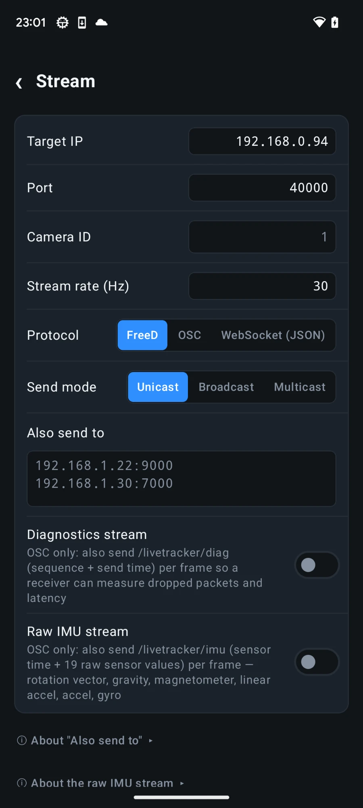
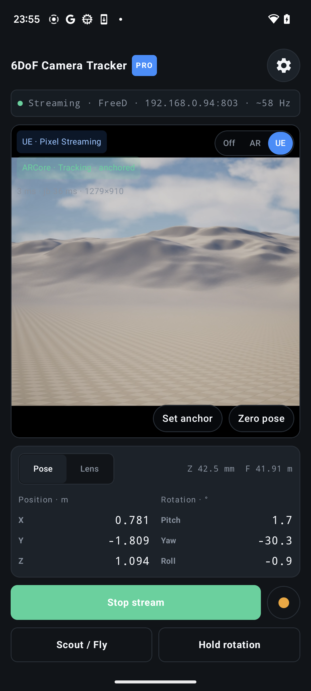

Choose your setup
Camera only: use Unreal's built-in Live Link, Live Link Camera, and Live Link FreeD plugins. FreeD carries position, rotation, zoom, focus, and iris from the phone to a Cine Camera. The camera stream and markers are available in Lite, limited to five minutes per session at up to 30 Hz.
Editor workflow beta: the optional content-only Camera Motion Studio Link plugin adds a LiveTracker menu, an automatic FreeD source, a ready-to-bind camera rig, OSC transport commands, and actor markers. It is editor-only; a packaged game needs its own Blueprint integration.
There is no public plugin download linked from this guide. Contact Tech Story to request the Unreal editor plugin beta. You can set up the camera with built-in FreeD without it.
Set up the phone
In Camera Motion Studio's setup wizard, choose Unreal Engine and enter the Unreal workstation's local IP address and FreeD UDP port (usually 40000). The wizard selects FreeD and enables the available UE, OBS, and NDI return-viewfinder modes.
Check Settings > Stream: Protocol FreeD, Target IP = the workstation, Port = the FreeD source's port, Camera ID 1, and Unicast. Keep Default axis mapping and Space scale 1. FreeD already converts metres to its wire units; another space scale makes the camera travel too far or too little.

Connect Live Link FreeD
- In Unreal, enable Live Link, Live Link Camera, and Live Link FreeD under Edit > Plugins, then restart if requested.
- Open Window > Live Link and add a LiveLinkFreeD Source. Listen on
0.0.0.0at the phone's Target Port. Allow Unreal through the workstation firewall for that UDP port. - Add a Cine Camera Actor and a Live Link Controller component. Set its Subject Representation to the FreeD subject, usually Camera 1.
- Start tracking and streaming on the phone. Move it to check the camera response, then use Zero pose to align the starting heading. If Scout is enabled, Zero keeps its placement; use Fly home to return the fly/look offset to its base.
The stream contains the final camera movement after the app's Scout / Fly offset, rigs, effects, and aim controls. Unreal receives the camera you operated, not just raw sensor values. Verify right, forward, up, and the rotation axes separately before recording a shot.
Align lens data
Calibrate zoom, focus, and iris in the phone's Settings > Lens for physical focal length, focus distance, and f-stop values. Unreal's stock Live Link FreeD source normalizes incoming encoder numbers; it does not automatically treat a calibrated phone value as the final lens value.
- In the FreeD source's Source Settings, enable manual ranges for focal length and the user-defined iris channel, with Is Valid enabled. Configure focus separately below. Set their ranges to the app's calibrated physical range multiplied by
1000(for example, 24-85 mm becomes 24000-85000). Set the iris field's mask to0xFFFF. - On the Live Link Camera Controller, use the camera range and match the Cine Camera's focal-length and f-stop limits to the app's physical ranges.
- Check the resulting zoom and aperture on the camera. Focus uses a different stock mapping with a fixed far bound; use the focus setup below instead of assuming the calibrated near/far range reconstructs the distance.
For stock FreeD focus, calibrate focus on the phone and enable Remap to default UE Focus Range under Lens. Set UE near focus (m) to the Cine Camera's near bound (default 0.015). Use the fixed focus encoder Min/Max shown by the app, normally 15 and 1000000, with Is Valid and manual range enabled; do not subtract the near bound again in Unreal. The app applies an empirical correction. Verify displayed distance against a known scene target on your engine version. Custom lens setups can instead use a Lens File focus curve; do not combine recipes without checking the result.
Iris travels in FreeD's 16-bit user-defined field. For visible depth of field, the Live Link source must recognise the aperture channel and the Unreal scene must have depth of field enabled.
Optional editor plugin beta
If you have the LiveTrackerLink beta folder, place it in the Unreal project's Plugins directory and reopen the project. The content-only plugin enables its Live Link and Python dependencies. In an open level, choose LiveTracker > Set up camera rig in this level. It creates a LiveTracker_Origin and Cine Camera with a Live Link controller on Camera 1, and adds the FreeD source when the project opens.
LiveTracker > Status is designed to report the listening ports, last phone buttons, source, rig, and marker activity. The plugin stores port and phone settings in Saved/LiveTracker/settings.json; restart the link after changing them. Save the level yourself after creating the rig.
Send scene markers to the phone
The beta plugin can tag up to 16 actors and send their shapes and positions back to the phone's read-only Live scene. This gives the operator points to aim at and hold focus on. Marker positions are relative to LiveTracker_Origin; place it where phone tracking began.
- On the phone, enable Settings > Stream > Scene link > Accept a marker link.
- In the plugin settings, set
phone_ipto the phone's address. The default marker link port is4001. - In Unreal, select actors and choose LiveTracker > Markers > Add selected actors. Approve the connection on the phone. Use the phone's Scene tab to confirm the Live scene appears.
Actors can hold Focus, Aim, and Ref together, using separate TrackerRole tags or a list such as TrackerRole:Focus,Ref. Role menu items toggle that role while retaining the others; each role still belongs to one actor. Ref follows position, or position plus heading, according to the plugin setting. FreeD continues to carry the final world camera from the phone; it does not perform receiver-local reconstruction.
Keep the phone on Default axis mapping. With FreeD, Unreal receives no marker-link acknowledgement, so check status on the phone.
See Unreal's picture on the phone
The return image is independent of FreeD tracking and OSC buttons. For Unreal Pixel Streaming, run its signalling server, enter the server address under Settings > View / Preview Input, and choose the UE viewfinder mode. If the editor crashes with H264, try VP9 encoding on the Unreal side.
You can also capture Unreal in OBS Studio and send its output to the phone over WHIP or NDI. Follow the OBS viewfinder guide →

Connection checks
- No Live Link subject: check the phone's Target IP, matching FreeD port, active stream, shared network, and Unreal firewall permission.
- Camera travel is too large or small: restore app Space scale 1 and Default axis mapping.
- Lens response differs from the phone: align Live Link FreeD encoder ranges and the Cine Camera's lens limits; check the app's UE focus remap and matching fixed source range, or your Lens File curve.
- Buttons do nothing: confirm Pro, the phone's OSC port, the plugin's
osc_port, firewall permission, and that the editor link is running. - Markers do not appear: check the phone's scene-link switch,
phone_ip, port4001, the Allow prompt, and the phone's Scene tab.